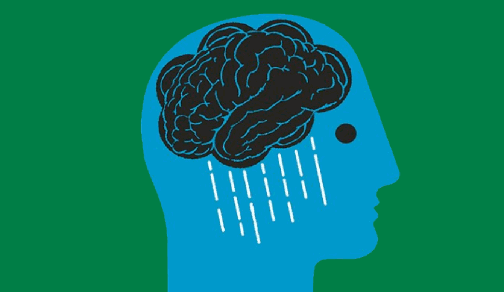

महिलाहरूमा उदासीनता

- अन्य मानसिक समस्याहरू भन्दा उदासीनता बढि देखिएको पाइएको छ । साधारणतया पुरूष भन्दा महिलाहरू २—३ गुणा बढि जोखिममा हुने र महिलाहरूमा यसको जोखिम अझ बढि गर्भवति तथा सुत्केरी अवस्थामा भएको पाइएको छ ।
- गर्भ रहे देखि बच्चा जन्मिएको एक वर्ष भित्र कुनै कुनै महिलालाई हर्माेनको गडबडी वा अन्य तनावपूर्ण अवस्थाको कारणले गर्दा उदासीनताका लक्षणहरू देखिन सक्छन् जसलाई Perinatal Depression भनिन्छ ।
- उदासीनता भएका गर्भवति तथा सुत्केरी महिलाहरूमा नकरात्मक भावनाहरू बढि महसुस गर्ने भएकाले यसले आमा साथै बच्चा दुवैको स्वास्थ्य र बच्चाको दीर्घकालिन विकासमा असर पार्न सक्छ । त्यसैगरि, परिवारसँगको सम्बन्धमा पनि उत्तिकै असर पार्न सक्छ । त्यसैले समयमै यस समस्याको पहिचान गरि व्यवस्थापन गरेमा आमा र बच्चा दुवैको विकासमा सुधार ल्याउन सकिन्छ ।
- उदासीनता भएका गर्भवति महिला÷आमाहरू स्वास्थ्य परिक्षणको लागि नजाने, बालबच्चाको राम्रो स्याहार नगर्ने, समयमै दुध नखुवाउने गरेको पाइएको छ जसका कारणले बालबच्चाको शारीरिक, बौद्धिक र व्यवहारमा समस्या हुन सक्ने सम्भावना बढि हुन्छ । उदासीनता भएका महिलाहरूको बच्चा कम तौलको हुने, सामाजिक प्रतिक्रियामा कमजोर, साथै खाना तथा सुताइमा समस्या भएको पाइएको छ ।